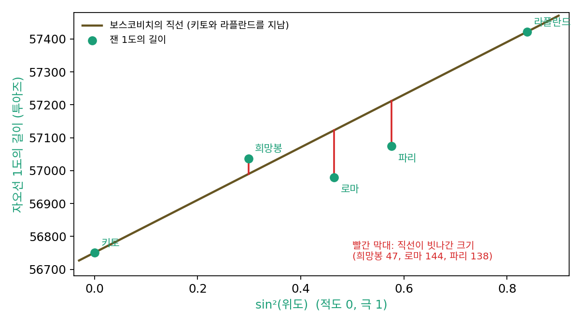
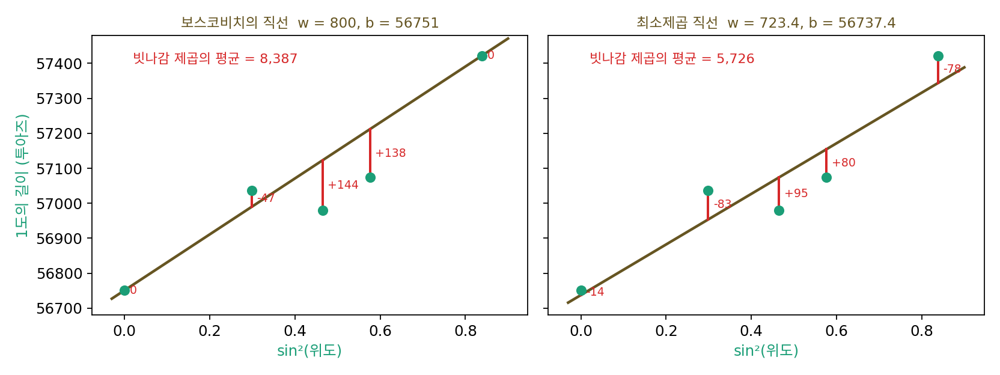

손실 지형: 공을 굴려 손실의 바닥을 찾는 첫 실험
이 장의 물음
신경망 학습 코드를 처음 돌리면 화면에 숫자가 한 줄씩 찍힌다. epoch 1, loss 2.31, epoch 2, loss 1.87, … 이 loss 값이 줄어들면 학습이 잘되고 있다고들 한다. 그런데 loss는 무엇을 잰 숫자일까? 모델이 내놓은 답이 수천 개인데, 그 답들이 맞고 틀린 정도가 어떻게 숫자 하나로 모일까? 모으는 방법을 바꾸면 「가장 잘 맞는 모델」도 바뀔까?
숫자가 줄어든다는 것은 무언가가 움직였다는 뜻이다. 학습 도중에 바뀌는 것은 모델 안의 파라미터(학습으로 고치는 숫자들)다. 파라미터를 이렇게 바꾸면 손실이 줄고 저렇게 바꾸면 는다. 그렇다면 파라미터의 모든 조합에 손실을 하나씩 매겨 한눈에 펼쳐 볼 수는 없을까? 펼쳐 놓으면 어떤 모양일까?
그리고 파라미터가 수백만 개이면 그 펼친 모양을 다 볼 길이 없다. 다 보지 못한 채로 손실이 가장 작은 곳을 어떻게 찾아갈까? 찾아간 곳이 정말 가장 낮은 곳이라고 어떻게 알까?
이 장은 다음 물음에 차례로 답한다.
- 모델이 데이터를 얼마나 빗나가는지를 숫자 하나로 모으려면 어떻게 할까? 모으는 법에 따라 무엇이 달라질까?
- 파라미터가 둘인 모델에서 모든 파라미터 조합의 손실을 한 장에 그리면 어떤 모양이 될까?
- 손실이 가장 작은 곳을, 지금 선 자리 근처만 보고 찾아갈 수 있을까?
- 그렇게 찾아간 곳이 가장 낮은 곳이 아닐 수도 있을까?
손실 함수: 빗나간 정도를 숫자 하나로
모눈종이에 점 다섯 개를 찍고 그 점들을 가장 잘 대표하는 직선을 자로 그어 보라고 하면, 사람마다 조금씩 다른 직선을 긋는다. 점 다섯 개가 한 줄에 놓여 있지 않으면 다섯 점을 모두 지나는 직선은 없다. 어떤 직선은 왼쪽 점들에 가깝고, 어떤 직선은 가운데 점들에 가깝다. 두 사람이 서로 자기 직선이 낫다고 다투면 무엇으로 판정할까? 「더 잘 맞는다」는 느낌을 숫자로 바꾸는 규칙이 있어야 한다. 그 규칙은 하나뿐일까?
역사: 보스코비치의 다섯 점과 르장드르의 제곱
이 물음을 처음 진지하게 붙든 사람들은 지구의 모양을 재던 천문학자들이었다. 뉴턴은 지구가 돌기 때문에 적도 쪽이 부풀고 극 쪽이 눌린 모양일 것이라고 했다. 그렇다면 위도 1도에 해당하는 자오선(남북으로 잇는 선)의 길이는 극으로 갈수록 길어져야 한다. 18세기 중반까지 적도의 키토, 남아프리카의 희망봉, 로마, 파리, 북쪽의 라플란드 다섯 곳에서 이 길이를 잰 값이 나와 있었다. 이론에 따르면 1도의 길이는 sin²(위도)에 대해 직선이 된다. 직선의 절편은 적도에서 1도의 길이이고, 기울기는 적도에서 극까지 가며 늘어나는 1도의 길이(투아즈)다. 다섯 점에 직선 하나를 맞추면 지구가 얼마나 눌렸는지(편평도) 알 수 있다.
예수회 신부이자 수학자인 루제르 보스코비치(Ruđer Bošković, 1711–1787)는 지금의 크로아티아 두브로브니크 출신으로, 로마에서 크리스토퍼 메어(Christopher Maire)와 함께 교황령을 가로지르는 자오선 측량을 했다. 1755년에 낸 이 측량의 보고서에서 그는 다섯 곳 가운데 두 곳씩 골라 이은 직선 열 개의 기울기를 평균했다. 열 직선 가운데에는 로마와 희망봉을 이어 오른쪽 아래로 기운 직선도 섞여 있었는데, 이 직선대로라면 극으로 갈수록 1도가 짧아지니 말이 안 되는 직선이었다. 그래서 그는 열 개를 모두 평균한 값과, 기울기가 가장 작은 두 개를 빼고 평균한 값을 함께 내놓았다. 같은 다섯 점으로 다시 계산해 보면 열 개를 모두 평균할 때 편평도가 약 1/255, 두 개를 빼고 평균할 때 약 1/198이 나온다(보스코비치가 적은 숫자 자체는 자료마다 다르게 옮겨져 있다). 무엇을 빼느냐에 따라 답이 크게 바뀐 것이다. 2년 뒤인 1757년에 그는 기준을 먼저 세우자고 했다. 직선이 빗나간 크기들을 더하면 0이 될 것(위로 빗나간 만큼 아래로도 빗나갈 것), 그리고 그런 직선 가운데 빗나간 크기의 절댓값을 모두 더한 것이 가장 작을 것. 「잘 맞는 직선」을 손으로 고르지 않고 먼저 세운 기준에 따라 계산으로 정하자는 생각이었다.

절댓값을 다루는 계산은 손으로 하기 까다로웠다. 반세기 뒤인 1805년, 프랑스의 수학자 아드리앵마리 르장드르(Adrien-Marie Legendre, 1752–1833)는 혜성의 궤도를 구하는 책 끝에 아홉 쪽짜리 부록 「최소제곱법에 대하여(Sur la méthode des moindres quarrés)」를 붙였다. 그는 빗나간 크기를 절댓값 대신 제곱해서 더하고, 그 합을 가장 작게 하자고 했다. 영어 번역본에 따르면 그는 이 원리가 다른 어떤 원리보다 일반적이고, 정확하고, 쓰기 쉽다고 적었다. 제곱의 합을 가장 작게 하면 「오차들 사이에 일종의 평형이 세워져서, 극단이 지나친 힘을 쓰지 못하게 막는다」는 것이다. 그리고 부록의 뒤쪽 다섯 쪽에서 이 방법을 바로 지구의 편평도 문제에 썼다. 보스코비치가 붙든 바로 그 문제였다.
직선 둘을 숫자 하나로 비교하기
보스코비치의 다섯 점을 그대로 장난감으로 쓰자. 파라미터가 기울기와 절편 둘뿐이고, 점이 다섯 개뿐이라 손으로도 따라갈 수 있고, 무엇보다 사람들이 실제로 「어느 직선이 가장 잘 맞나」를 두고 고민한 자료이기 때문이다. sin²(위도)를 x, 1도의 길이(투아즈)를 y로 적는다.
| 곳 | x = sin²(위도) | y = 1도의 길이 |
|---|---|---|
| 키토 | 0 | 56751 |
| 희망봉 | 0.2987 | 57037 |
| 로마 | 0.4648 | 56979 |
| 파리 | 0.5762 | 57074 |
| 라플란드 | 0.8386 | 57422 |
기울기 w와 절편 b를 정하면 직선은 곳마다 1도의 길이를 w·x + b로 예측한다. 보스코비치의 글에 실린 직선(w = 800, b = 56751)은 키토와 라플란드를 지나므로 이 두 곳에서는 빗나감이 0이다. 그 대신 희망봉에서 47, 로마에서 144, 파리에서 138투아즈를 빗나간다(예측 − 실제로 −47, +144, +138). 이와 다른 직선 w = 723.4, b = 56737.4를 그어 보면, 다섯 곳 모두에서 조금씩 빗나가서 −14, −83, +95, +80, −78이다. 어느 쪽이 나은가? 보스코비치의 직선은 두 곳에서 완벽하고 두 곳에서 크게 틀렸다. 둘째 직선은 완벽한 곳이 없는 대신 크게 틀린 곳도 없다. 빗나감 다섯 개를 나란히 놓고 보면 판정이 서지 않는다.
판정을 내리려면 다섯 개를 숫자 하나로 모아야 한다. 르장드르를 따라 빗나감 다섯 개를 각각 제곱해 더하고 5로 나누면, 보스코비치의 직선은 8,387이고 둘째 직선은 5,726이다. 이 잣대로는 둘째 직선이 낫다. 잣대가 정해지면 직선 둘이 아니라 어떤 직선이든 빗나감 제곱의 평균 하나로 줄을 세울 수 있다.
이렇게 파라미터를 넣으면 모델이 데이터를 빗나간 정도를 숫자 하나로 돌려주는 함수를 손실 함수 (빗나감을 숫자 하나로 모으는 규칙 / loss function)라 하고, 그 값을 손실이라 한다. 빗나감을 제곱해 평균하는 손실을 평균 제곱 오차라 한다. 이 장에서 쓰는 손실은 다음과 같다.
손실이 정해지면 「가장 잘 맞는 직선」이라는 막연한 말이 「𝓛(w, b)가 가장 작은 w와 b」라는 계산 문제로 바뀐다. 그리고 손실을 정하는 것은 계산이 아니라 선택이다. 보스코비치는 절댓값의 합을 골랐고 르장드르는 제곱의 합을 골랐다. 같은 다섯 점에서 보스코비치의 기준을 그대로 계산하면 w = 692.3인 직선이 나오고, 제곱의 평균으로는 w = 723.4인 직선이 나온다. 편평도로 바꾸면 각각 1/246과 1/235다(오늘날 쓰는 값은 1/298.257이다. 다섯 측량 자체의 오차가 컸다).

ML에서: 손실이라는 한 숫자
파이토치로 회귀 모델을 학습시킬 때 쓰는 nn.MSELoss()가 이 평균 제곱 오차다. 예측 수천 개와 정답 수천 개를 넣으면 숫자 하나가 나오고, 학습 코드가 화면에 찍는 loss가 그 숫자다. 분류 모델에서는 정답 칸에 준 확률의 로그를 쓰는 크로스 엔트로피(nn.CrossEntropyLoss())를 흔히 쓰지만, 모델의 모든 답을 숫자 하나로 모은다는 구실은 같다. 학습이 하는 일은 결국 이 손실 값이 줄어들도록 파라미터를 고치는 것이다.
보스코비치와 르장드르의 갈림길도 그대로 남아 있다. 파이토치에는 빗나감의 절댓값을 평균하는 nn.L1Loss()와, 작은 빗나감은 제곱하고 큰 빗나감은 절댓값처럼 다루는 nn.HuberLoss()도 있다. 어느 손실을 고르느냐에 따라 같은 데이터에서 학습된 모델이 달라진다. 손실을 고르는 것은 「무엇을 잘한다고 칠 것인가」를 정하는 일이고, 그 뒤의 모든 계산은 그 선택을 따른다.
문제 1. 모임 장소 고르기
곧은 길 하나를 따라 친구 다섯이 산다. 길의 한쪽 끝에서 재면 0, 1, 2, 3, 10 km 자리다. 모두가 길 위의 한 곳에 모이려 한다. (가) 다섯 사람이 걷는 거리의 합이 가장 작은 곳은? (나) 걷는 거리의 제곱의 합이 가장 작은 곳은? (다) 10 km 친구가 30 km 로 이사 가면 두 답은 어떻게 바뀌는가?

이건 평균이죠. (0 + 1 + 2 + 3 + 10)/5 = 3.2 km요. (가)든 (나)든 3.2에서 모이면 공평하잖아요.

3.2에서 모이면 거리의 합은 얼마죠? 2에서 모이면요?

3.2에서는 3.2 + 2.2 + 1.2 + 0.2 + 6.8 = 13.6 km, 2에서는 2 + 1 + 0 + 1 + 8 = 12 km예요. 2가 더 작네요. 컴퓨터로 0.01 km 간격으로 다 재 봐도 거리 합은 2에서 가장 작아요.

거리 합은 가운데 사람 자리, 중앙값에서 가장 작아. 모이는 곳을 2에서 조금 오른쪽으로 옮기면 왼쪽 세 사람은 그만큼 더 걷고 오른쪽 두 사람은 그만큼 덜 걸으니까 합이 늘어나. 평균 3.2가 답인 건 (나)야. 제곱 합이 3.2에서 62.8, 2에서는 70이야.

그럼 (다)로 가 볼까요. 10 km 친구 한 명이 30 km 로 이사 가면 두 답은 각각 어디로 갈까요?

중앙값은 여전히 2예요. 가운데 사람이 그대로니까요. 평균은 7.2로 확 끌려가요. 제곱은 멀리 있는 한 사람의 거리를 크게 부풀려서, 그 사람 쪽으로 모임 장소를 끌어당기는 거예요. 르장드르가 말한 「극단이 지나친 힘을 쓰지 못하게」는 가장 멀리 떨어진 사람이 너무 멀어지지 않게 한다는 뜻이었네요. 3.2에서는 가장 먼 사람이 6.8 km인데 2에서는 8 km니까요.

조별 과제 회의 시간을 정할 때 다들 괜찮은 시간으로 하면 한 명이 새벽에 나와야 하고, 그 한 명까지 챙기면 다른 사람들이 조금씩 손해 보는 거랑 같네요. 무엇을 공평하다고 칠지부터 정해야 시간이 정해지는 거고요.
문제 2. 기준을 바꾸면 1등이 바뀐다
보스코비치의 다섯 점에 직선 넷을 그었다. 가: 보스코비치의 글에 실린 직선(w = 800, b = 56751). 나: 빗나감 제곱의 평균이 가장 작은 직선(723.4, 56737.4). 다: 보스코비치의 두 조건을 만족하는 직선(692.3, 56751.0). 라: 가장 크게 빗나간 곳의 빗나감이 가장 작은 직선(714, 56735.5). 넷을 (1) 빗나감 절댓값의 합, (2) 빗나감 제곱의 평균, (3) 가장 큰 빗나감으로 재어 순위를 매겨라.
나는 제곱의 평균이 가장 작게 만든 직선이니까, 어느 잣대로 재든 나가 1등일 것 같아. 가장 잘 맞는 직선은 하나잖아.
세 잣대로 다 재 볼까요? 숫자를 표로 놓아 보세요.
돌려 봤어요. 절댓값 합은 가 329.0, 나 349.9, 다 339.3, 라 352.7이에요. 제곱 평균은 가 8,387, 나 5,726, 다 5,802, 라 5,769. 가장 큰 빗나감은 가 143.8, 나 94.7, 다 93.8, 라 88.4예요.

어, 1등이 셋 다 달라. 절댓값 합은 가, 제곱 평균은 나, 가장 큰 빗나감은 라가 1등이야. 그리고 절댓값 합으로는 다보다 가가 더 작아. 보스코비치가 세운 기준으로 만든 직선 다가 절댓값 합에서 가한테 지는 거야?

다를 만든 조건을 다시 읽어 봐요. 조건이 둘이었죠.

아, 「빗나감의 합이 0」이라는 조건이 먼저 걸려 있었어요. 가는 빗나감이 0, −47, 144, 138, 0이라 합이 0이 아니에요. 다는 그 조건을 지키는 직선 가운데서 절댓값 합이 가장 작은 거고요. 조건 하나를 빼면 1등이 가로 바뀌어요. 「가장 잘 맞는 직선」은 잣대를 정하기 전에는 없는 말이네요. 해석학에서 거리를 다르게 정하면 수열이 수렴하기도 하고 안 하기도 했던 게 생각나요.

시험을 평균 점수로 보면 1등인 친구랑, 가장 못 본 과목으로 보면 1등인 친구가 다른 거랑 같네요. 장학금 기준을 뭘로 하느냐에 따라 받는 사람이 바뀌니까요.
문제 3. 잘못 적힌 정답 하나
입력 x = 1, 2, 3, 4, 5 의 정답이 y = 2.1, 3.9, 6.2, 8.0, 9.9 인 데이터에 직선을 맞춘다. 그런데 데이터를 옮겨 적다가 마지막 정답 9.9 를 99.0 으로 잘못 적었다. (가) 평균 제곱 오차(
MSELoss), 절댓값 평균(L1Loss), 후버 손실(HuberLoss, 빗나감 1까지는 제곱, 그 너머는 절댓값처럼)로 맞춘 직선의 기울기는 각각 얼마인가? (나) x = 6 에서 세 직선의 예측은? 바르게 적었다면 세 직선 모두 11.93 을 예측한다.
다섯 개 중에 하나 틀린 거니까 큰 차이는 없을 것 같아요. 평균 제곱 오차로 돌려 볼게요. 어… 기울기가 19.79, 절편이 −35.53이에요. x = 6에서 83.21을 예측해요.
바르게 적었을 때 기울기는 1.97이었죠. 열 배가 됐어요. 숫자 하나가 직선을 이렇게 끌고 간 까닭을 빗나감에서 찾아볼까요?

잘못 맞춘 직선의 빗나감이 −17.84, 0.15, 17.64, 35.63, −35.58이에요. 제곱하면 넷째와 다섯째가 합의 40%씩을 차지해요. 다섯째 점 하나를 덜 빗나가려고 직선 전체가 기울어 버렸어요.
절댓값 평균으로 맞추면 기울기 2.05, 절편 0.05야. x = 6에서 12.35. 후버 손실은 기울기 2.55, 예측 14.27이고. 절댓값은 99.0에서 빗나간 크기가 89든 90이든 한 칸 더 빗나갈 때마다 같은 만큼만 손해니까, 그 점 하나를 위해 나머지 넷을 버리지 않아.
문제 1(모임 장소 고르기)과 나란히 놓아 보면 어때요?
문제 1에서 평균과 중앙값이 갈린 것과 같아요. 제곱은 평균처럼 멀리 있는 하나에 끌려가고, 절댓값은 중앙값처럼 버텨요. 후버 손실은 작은 빗나감은 제곱처럼 부드럽게, 큰 빗나감은 절댓값처럼 다뤄서 그 사이에 있어요.
라벨링 데이터에 오타 하나 섞이는 건 흔한 일인데, 그걸 모르고 평균 제곱 오차만 쓰면 모델이 그 오타에 맞추느라 다 망가질 수 있겠네요. 동아리 회비 정산표에서 0 하나 더 붙은 영수증 하나 때문에 일 인당 금액이 확 뛰었던 적이 있어요.